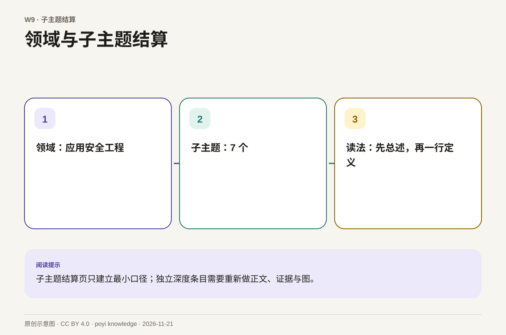
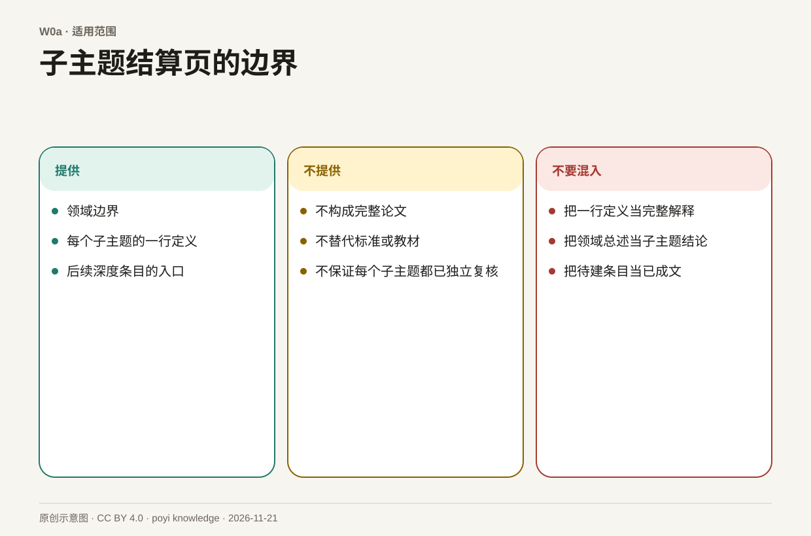

原理与机制
领域：应用安全工程。
应用安全关心密码学在真实系统里的部署：配置、密钥、协议实现、供应链与用户体验；一条错误默认值就能抵消强算法。
本页把该领域尚未单独成文的 7 个子主题集中结算：
- 信息安全持续监视（Information Security Continuous Monitoring）：持续监视把一次性合规检查变成 ongoing 的资产、漏洞与配置观察，强调可度量与可追溯。
- 安全与隐私控制评估（Security and Privacy Control Assessment）：控制评估检查安全与隐私控制是否按设计部署、是否有效，并把证据与整改闭环记录在案。
- 受控非密信息保护（Controlled Unclassified Information Protection）：受控非密信息保护关注非机密但敏感的数据如何分级、标记、传输与销毁，常见于国防供应链合规。
- 数字身份与认证器保证（Digital Identity and Authenticator Assurance）：数字身份保证把身份 proofing、认证器强度与联邦断言分开评估，回答“你凭什么相信这个身份”。
- Format-Preserving Encryption（format-preserving-encryption）：格式保留加密在加密后保持原数据格式与长度，常用于数据库字段与支付卡号；它的安全目标与普通分组模式不同。
- 系统安全工程与网络弹性（Systems Security Engineering and Cyber Resiliency）：系统安全工程把安全与网络弹性纳入需求、架构、验证与运维，而不是上线后补丁。
- 信息与系统安全分类（security-categorization）：安全分类按信息与系统受损害的影响定级，再据此选择控制基线；分类错误会让后续控制全部错位。
领域规模
本领域在目录中有 107 条登记条目，覆盖 13 个时代组。类型分布：algorithm 5，attack 5，theorem 0，protocol 0，standard 19，machine 3，person 1，event 8，term 15。这不是“全部已完成长文”的计数，而是可检索、可复核的目录节点数；每个节点是否达到机制深度，要看它自己的正文与来源。

为什么重要
把这些子主题放在同一页，是为了先建立领域边界与最小定义，再决定哪些需要独立深度条目。它避免用空链接占位，也避免把“有一个名字”误当成“已经解释清楚”。
关键争论
- 定义边界：领域名是检索标签，不是单一理论。把相邻条目合并会掩盖假设、模型与攻击能力的差异。
- 安全边界：目录登记与实现安全不是一回事；标准条款、参数与侧信道暴露必须分别核对。
- 历史叙事：人物、机构与事件的纪念性叙述不能替代一手档案，年代与优先权仍需逐条核验。
应用与实例
读法：先看领域总述，再逐个看子主题的一行定义。需要公式、参数或攻击复现时，沿子主题指向的条目继续；没有独立条目的，先以本页的一行定义为最小口径。
代表条目路线
- Argon2 口令派生（algorithm--argon2，level 3）
- bcrypt 自适应口令散列（algorithm--bcrypt，level 2）
- 金丝雀陷阱（attack--canary-trap，level 2）
- 口令喷洒（attack--password-spraying，level 1）
- 凭据填充（credential-stuffing，level 2）
- 联邦信息与信息系统安全分类标准（fips199，level 3）
- FPE 格式保留加密（fpe，level 3）
- 商用密码应用安全性评估（gbt32946，level 3）
- 密码应用标识规范（gbt33560，level 4）
- 信息系统密码应用基本要求（gbt39786，level 3）
高难度节点（level 3–4）：密码应用标识规范（4）、ADFGVX 破译（佩恩万）（3）、AF 电文（3）、Argon2 口令派生（3）、Colossus 照片卡（3）、香农论文页（3）、亚当·贝克（3）、培根书页（3）。读法是先看领域总述，再按“定义 → 代表构造 → 攻击/边界 → 标准/部署”四段走。
边界与攻击面
边界：本页是领域级的子主题结算页，不是每个子主题的完整论文。一行定义只负责“它属于什么、解决什么问题”，不替代标准、教材或原始论文；后续若建立独立条目，必须重新做双语正文与证据复核。
不要混入
- 不要把领域页当成该领域所有条目的完整论文。
- 不要把目录登记数当成“已核证结论数”。
- 不要把历史条目中的纪念性叙述当成本领域的技术证明。

历史与背景
应用安全工程的子主题在目录中跨越多个时代；本页只按领域聚合，不把不同年代的子主题压成一条时间线。
发展脉络（按登记时代）
古代起源（7） → 古典希腊罗马（2） → 阿拉伯黄金时代（4） → 文艺复兴与宗教改革（4） → 第一次世界大战（4） → 第二次世界大战（16） → 冷战与信息论转折（1） → 公钥革命（12） → 标准化时代（15） → 网络与协议时代（13） → 量子转折（2） → 前沿（9） → 中国平行线（19）
这条脉络只按目录的时代标签聚合，表示“本领域在哪些时代有登记节点”，不表示技术从一个时代线性进化到下一个时代。跨时代条目可能并存、回退或被重新解释。
参考出处
- 目录领域条目：应用安全工程（d23-applied-security）。
- Britannica search entry for Applied Security Engineering. https://www.britannica.com/search?query=Applied%20Security%20Engineering